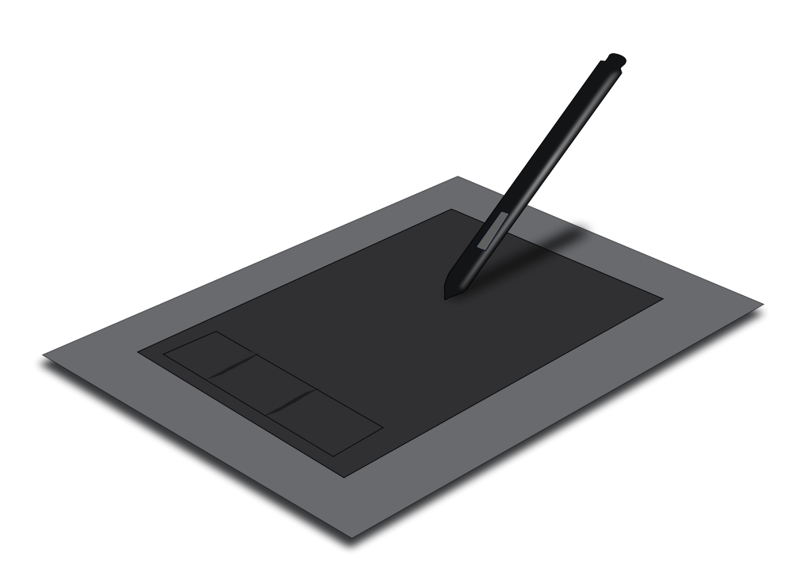
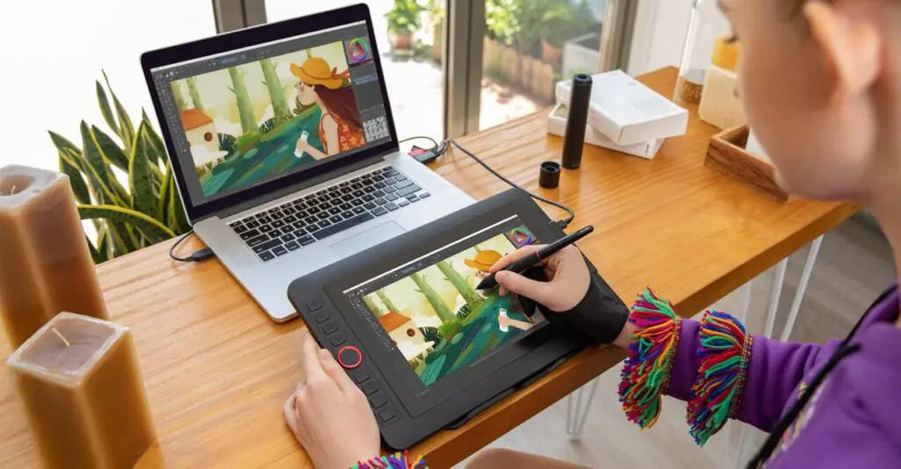

TABLETA DIGITALIZADORA
Introduction
La tableta digitalizadora o tableta gráfica es un periférico, un aparato electrónico que se usa para introducir información a un ordenador.
Este periférico, en particular, permite al usuario dibujar o escribir lo que quiera sobre ella, como si fuera una libreta, que luego aparecerá en la pantalla del ordenador a la cuál está conectada.
Usos

La función más común de la tableta es, obviamente, el dibujo, pero también tiene otras como:
- Introducir datos sobre un mapa (la destinación, la trayectoria, el camino que se toma, etc.). Los punto que introducen serán designados X, Y.
- Algunas aplicaciones requieren el uso de una tableta gráfica (principalmente aplicaciones de dibujo).
- A veces sirve de interfaz con procesos de fabricación.
Tipos
Existen 3 tipos de tabletas gráficas:
-Tabletas sin pantallas: Muestra lo que se dibuja en la tableta en la pantalla del ordenador. Se conecta con cable USB o con Bluetooth. Son las más baratas, pero hay que estar siempre mirando entre la tableta y la computadora.
-Tabletas con pantallas: podemos ver lo que hemos dibujado en la tableta además del ordenador, y así no siempre tener que estar mirando entre los dos. Se conecta con cables USB o HDMI. Son más cómodas que las anteriores, pero más grandes y caras
-Tabletas autónomas: La única tableta que tiene su propio sistema operativo, por lo que no hay que conectarla a una computadora durante el proceso de creación y edición, aunque obviamente hay que conectarla después para ver el resultado. Las más caras
Instalación
La forma de instalar la tableta gráfica varía dependiendo del modelo que se use. Lo primero será descargar los controladores compatibles, dependiendo del fabricante.
Después del derrub¡mbo+
Funcionamiento
Como ya se ha dicho, las tabletas gráficas se usan para introducir datos a la computadora. Para conseguir esto, usa el proceso de la digitalización, un juego de puntos para mostrar una imagen, sonido o documento en la pantalla.

El lápiz transmite señales que recoge la tableta, que luego son transmitidas al ordenador cuando se conecta. El grosor de las líneas dibujadas depende de la posición en la cuál se sujeta el lápiz. Cuanto más recto esté, más fino serán las líneas; y cuánto más inclinado; lo más grueso.
La tableta se conecta a la computadora mediante un cable dispositivo bluetooth
Marcas
Algunas de las marcas fabricantes de tabletas más importantes incluyen:
(https://www.ugee.com/)
(https://www.wacom.com/es-cl)
(https://www.xp-pen.es/)
(https://www.huion.com/)
¿Dónde se encuentran y cuánto cuestan?
Las tabletas digitalizadoras se pueden pedir online de sus páginas web, cómo las que ya hemos enseñado, o comprar pidiendo online en:
- Amazon (https://www.amazon.es/tableta-digitalizadora/s?k=tableta+digitalizadora)
- PcComponentes (http://www.pccomponentes.com/tabletas-digitales)
- Huinion Store (https://store.huion.com/eu/?gclid=CjwKCAiAhreNBhAYEiwAFGGKPG_yQiClsdnw3qewsbY9bQA9o208ev7w0cb3npYk5y7S_e7A7f_8RhoC66AQAvD_BwE)
Wacom Intuos Tableta gráfica Bluetooth
Precio: 70.24€
Wacom One Creative Pen Display
Precio: 337.99€
Ugee M708
Precio: 63.99€
XP-Pen Star G640S
Precio: 47.49€
Huion H610 Pro V2
Precio: 64.98€
Huion Kamvas 22
Precio: 469.00€
Comentarios del autor
No tengo experiencia personal con las tabletas digitalizadoras, pero este tipo de dispositivo me parece una herramienta muy útil, especialmente en la incorporación del dibujo manual en el ordenador. Cualquier tipo de arte gráfica se ve muy dependiente de lo que ofrecen.
De hecho, casi todas las tabletas personales actuales, e incluso los móviles de media y alta gama, ya incorporan las propiedades de las tabletas gráficas, aunque a simple vista, tal vez parezca que no tengan ese tipo de precisión y detallismo que tienen estas últimas.
Bibliografía
- https://es.wikipedia.org/wiki/Tableta_digitalizadora
- https://techlandia.com/funciona-tableta-digitalizadora-como_78868/
- https://www.elconfidencial.com/decompras/2020-05-23/las-10-mejores-tabletas-graficas-del-mercado_2607203/
- https://comprarunatablet.net/mejores-tabletas-graficas/
- https://www.tabletasgraficas.info/tabletas-digitalizadoras-sin-pantalla/
- https://www.xatakawindows.com/bienvenidoawindows8/como-usar-tu-tableta-digitalizadora-en-windows
- https://tecnologiandroid.com/tableta-grafica-caracteristicas-y-precios/
- https://www.educaciontrespuntocero.com/recursos/programas-tableta-grafica/
- https://www.xp-pen.es/forum-1798.html
- https://tips.clip-studio.com/es-es/articles/1217